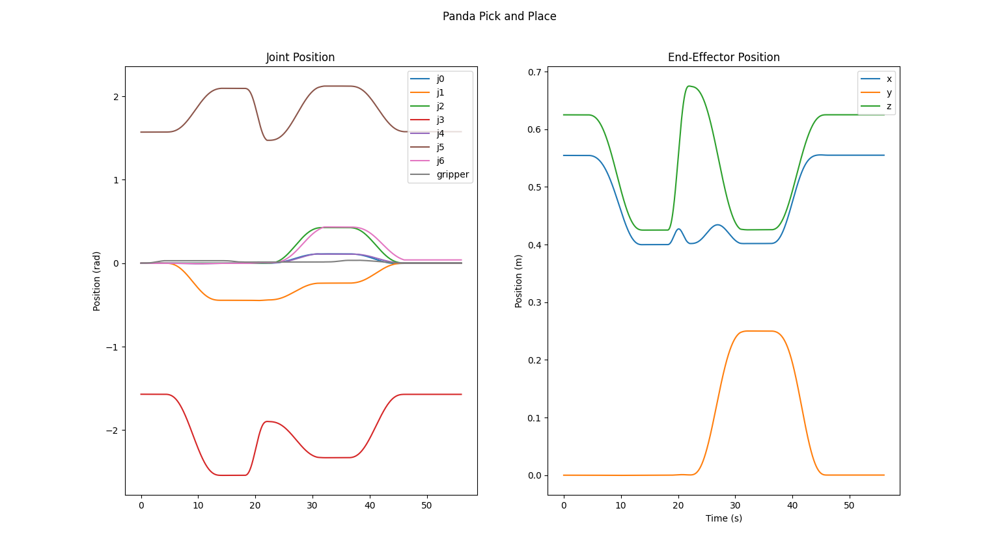

Pick and Place Motion Planning
Challenge
Many robot applications require picking up and placing an object. I wanted to program a robot arm to do just that, and simulate the results using Google's MuJoCo.
Solution Summary
I chose to use the popular Panda robot arm. I assume perfect knowledge of the Cartesian (x, y, z) location of the box in the world frame, and the robot's current joint angles (generalized coordinates). To move the gripper to grab the box I must do:
- Inverse kinematics to determine a combination of joint angles corresponding the gripper being at the Cartesian location of the box
- Trajectory generation to plan a sequence of incremental movements that quickly and smoothly gets the arm from where it starts to where the box is, all while respecting the physical limitations of the motors
- Proportional-derivative feedback control to determine the desired joint accelerations that cause the arm to follow the generated trajectory, and self-correct any deviations from it.
- Forward dynamics to calculate torque commands for each motor which produce the desired joint accelerations, accounting for the effects of mass, inertia, and gravity on the arm.
Inverse Kinematics
Calculating the joint angles which cause the end-effector to be at the target location is a process called inverse kinematics (IK). Expressed analytically, the goal is to find the joint angles, theta, such that the position of the gripper, f(theta), equals the desired position, xd, which is to say f(theta) - xd = 0. This is an instance of the classic root-finding problem, which I solve numerically using the Newton-Raphson iterative algorithm which I pick for its simplicity, and sufficient stability.
I describe the robot's configuration as a transformation matrix in the special Euclidean group 3 (SE3) for additional numerical stability. Iteratively, until a value for theta convergences, I calculate the body twist which moves the end-effector from its current position f(theta) towards the goal position xd. Multiplying that twist by the pseudoinverse of the end-effector body Jacobian (which MuJoCo indirectly provides) gives a change of theta which steps the current location towards the desired one. I add that change of theta to the current best guess of theta to get the new best guess for the next iteration (Lynch's Modern Robotics chapter 6) .
Trajectory Generation
Planning the arms's motion from an initial position, q_start, to the desired position, target, is called trajectory generation.
I start with finding the geometric shape of a valid path. I take the simplest approach of linearly interpolating between the start and end poses by having the robot follow a straight line through joint space. Because the joint angles form a convex set, intermediate joint angles should be valid.
I then calculate how the robot moves along that path. I impose the constraint that the proportion of path covered at time t follows a quintic polynomial, and at time T, the robot's at the path's end. This guarantees smooth motion, and offers 6 constants I can tune to ensure zero start & end velocities & accelerations, which I do to reduce vibrations (Lynch's Modern Robotics chapter 9). I want the motion to be fast, so I pick T to be as low as possible while still respecting within a wide margin of safety the manufacturer's guidance on max motor angular velocity and acceleration for the panda robot. In practice I found that slower motion, well below the joint limits, achieved more consistent motion as its easier to control.
The result is a series of generalized positions, velocities, and accelerations which incrementally, smoothly, and efficiently get the robot from its starting pose to a desired one.
Proportional-Derivative Feedback Control
The robots actual motion will inevitably diverge from the planned motion due to unmodeled or unpredictable dynamics such as friction, heat-dependent motor behavior, changing battery charge, and join elasticity. A feedback controller allows the robot to self-correct by comparing the planned motion path and actual motion path to determine a desired acceleration which restores the robot's actual motion to the planned motion. I use the proportional-derivative (PD) feedback controller which is popular for its simplicity, versatility and interpretability.
The PD controller considers how far off the robot is from where the motion plan says it should be, and applies an acceleration boost correction proportional to that. The farther off, the larger the acceleration boost. The inertia of the links makes these boosts compound which can cause the joint to overshoot the desired value and then have error in the opposite direction. We account for this by adding a term (the derivative term) which penalizes over correction by reducing the acceleration boost in proportion to the rate of change of the error. This way, if the error is already well on its way towards being corrected, less boost is applied.
Forward Dynamics
The PD controller gives a desired angular acceleration for each joint so that it follows the planned trajectory. Motors on the Panda robot take torque commands. There's a local feedback loop embedded in the hardware itself which adjusts the voltage supplied to each motor to enforce those torque commands. Determining what torque command achieves the desired joint acceleration is the problem of forward dynamics. MuJoCo internally calculates the effective mass and bias matrix based on the robot state and mass distribution. This aligns with a Newton-Euler formulation of dynamics (Modern Robotics Lynch chapter 8), allowing a simple calculation of torques by multiplying the mass matrix by the vector of desired accelerations and adding the bias vector.
Simulation
I set the actuator force values equal to the calculated desired torques. I then have MuJoCo update the robot's state over a small time step, given that input, and render the result. This repeats for tens of thousands of short time steps to get the simulated motion depicted in the graphs below and video above.
Result
The resulting motion, in simulation, is smooth, quick, consistent, and well within the limits of the actuators.
